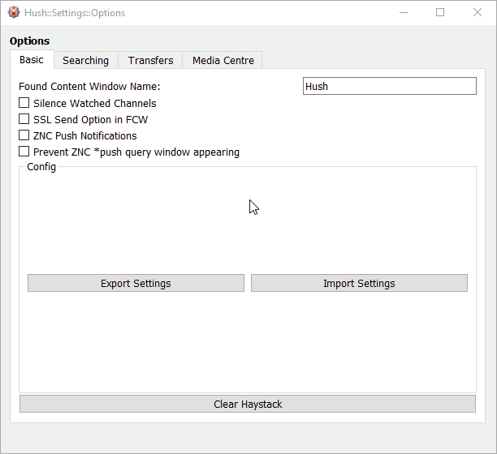

The Options window has a Basic tab which lists some fundamental options and functions. See the animation below to see the current options.

The Found Content Window is where Hush will display any passive searches it finds, any pack requests made from instant search and any DCC messages it is monitoring. It will automatically appear in the channel list when it finds a match to any of your searches. The Found Content window will show packs from multiple networks/channels that you are connected to. Hush knows which channel and network the pack is from and will send the request to the correct place if you click to fetch a pack.
Many users prefer to silence the channels that show the xdcc announcements of packs from bots (there are thousands of them!). Hush will stop all channel messages in your watched channels if you tick this option.
SSL DCC sending option will display single-click links for sending via SSL DCC in your search matches.
ZNC Push Notifications option will forward any searches Hush matches through your ZNC server using the ZNC Push module. For this option to work you must have:
Prevent ZNC *push query window appearing option will stop the *push query window appearing in the channel tree list. Note: this will stop the *push query window from appearing all the time. If you need to use the *push query, you will need to untick this option in Hush Options.
Export Settings will let you save all your Hush settings to a file on disk. All settings are saved: channels, searches and option values.
Import Settings will let you load Hush settings from a file on disk. If the file loaded is not a valid KVC (KVIrc Config) formatted file then no settings will change in Hush but no warning will be given. Any existing settings will be overwritten. Use carefully.
Clearing the Haystack will reset the tracking that Smart Mode has done since KVIrc started. If you are trying to find something that perhaps you have found before and it wont appear in the Found Content window, you should try clearing the Haystack. The Haystack will only be reset if you click this button or if you click the "Reset Entire Database" button in the Searching Options tab.